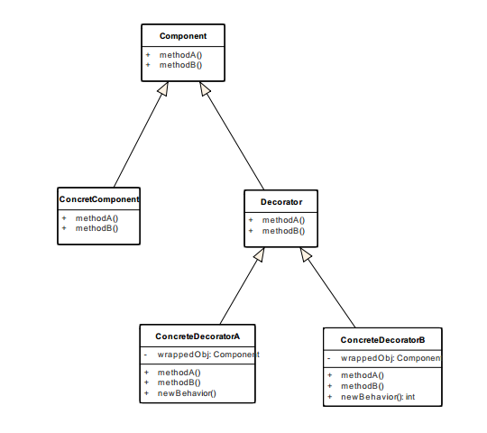
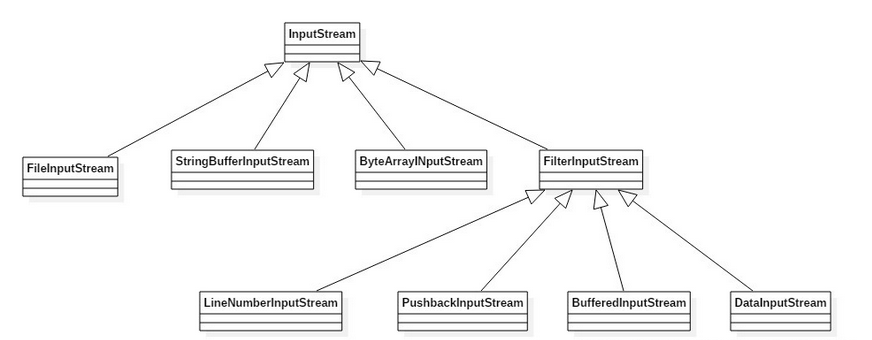

装饰者模式
定义
装饰者模式动态地将责任附加到对象上，若要扩展功能，装饰者提供了比继承更有弹性的替代方案。
类图

- 每个组件都可以单独使用，或者被装饰者包装起来使用。
- 每个装饰者（Decorator）都“有一个”（包装一个）组件，也就是说，装饰者有一个实例变量保存某个Component的引用。
- ConcretComponent是我们将要动态地加上新行为的对象，它扩展自Component。
实现
public abstract class Beverage {
String description = "Unknown Beverage";
public String getDescription() {
return description;
}
public abstract double cost();
}
public class DarkRoast extends Beverage {
public DarkRoast() {
description = "Dark Roast Coffee";
}
public double cost() {
return .99;
}
}
public class Decaf extends Beverage {
public Decaf() {
description = "Decaf Coffee";
}
public double cost() {
return 1.05;
}
}
public abstract class CondimentDecorator extends Beverage {
public abstract String getDescription();
}
public class Milk extends CondimentDecorator {
Beverage beverage;
public Milk(Beverage beverage) {
this.beverage = beverage;
}
public String getDescription() {
return beverage.getDescription() + ", Milk";
}
public double cost() {
return .10 + beverage.cost();
}
}
public class Mocha extends CondimentDecorator {
Beverage beverage;
public Mocha(Beverage beverage) {
this.beverage = beverage;
}
public String getDescription() {
return beverage.getDescription() + ", Mocha";
}
public double cost() {
return .20 + beverage.cost();
}
}
public class StarbuzzCoffee {
public static void main(String args[]) {
Beverage beverage2 = new DarkRoast();
beverage2 = new Mocha(beverage2);
beverage2 = new Mocha(beverage2);
System.out.println(beverage2.getDescription()
+ " $" + beverage2.cost());
}
}
设计原则
对扩展开放，对修改关闭。
Java IO类

public class InputTest {
public static void main(String[] args) throws IOException {
int c;
try {
InputStream in =
new LowerCaseInputStream(
new BufferedInputStream(
new FileInputStream("test.txt")));
while((c = in.read()) >= 0) {
System.out.print((char)c);
}
in.close();
} catch (IOException e) {
e.printStackTrace();
}
}
}
public class LowerCaseInputStream extends FilterInputStream {
public LowerCaseInputStream(InputStream in) {
super(in);
}
public int read() throws IOException {
int c = in.read();
return (c == -1 ? c : Character.toLowerCase((char)c));
}
public int read(byte[] b, int offset, int len) throws IOException {
int result = in.read(b, offset, len);
for (int i = offset; i < offset+result; i++) {
b[i] = (byte)Character.toLowerCase((char)b[i]);
}
return result;
}
}